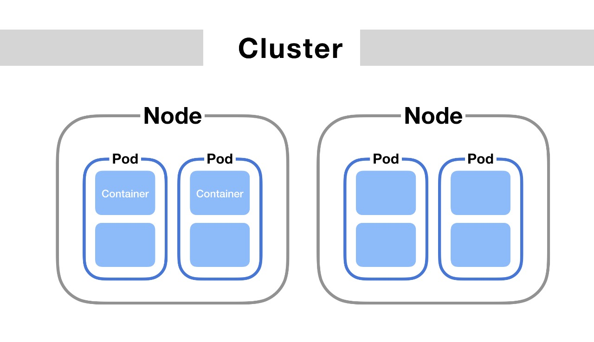
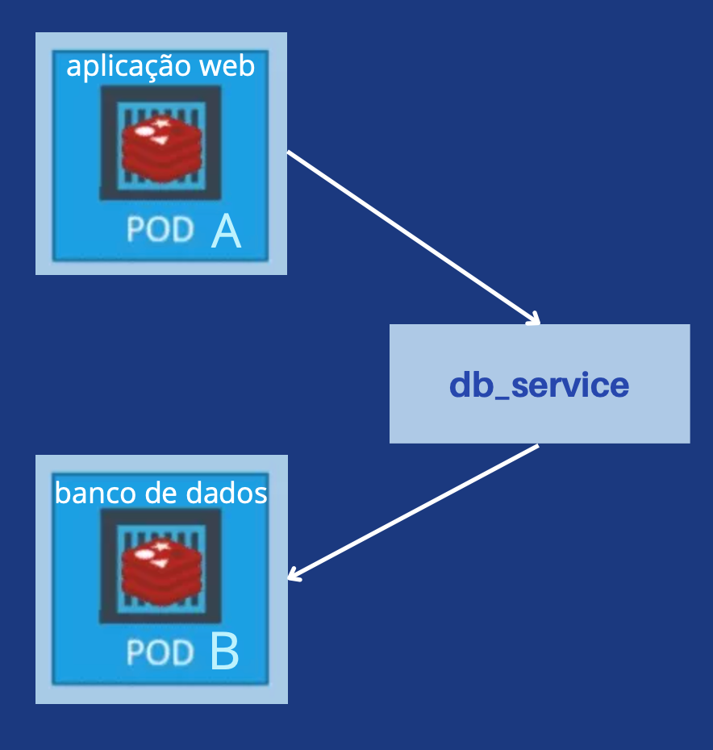
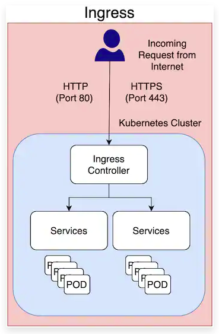

As engrenagens do Kubernetes
Nesta seção vamos explorar os componentes que são a base do Kubernetes. Veremos o que são Pods,
como eles se comunicam entre si e como usuários externos se comunicam com Pods. Veremos também
outras peças fundamentais, como ConfigMaps e Volumes.
Pods
Um Pod é a menor unidade de execução no Kubernetes que um usuário pode interagir e configurar, e se localizam dentro de um Node
(mais sobre isso em Arquitetura).
Ele encapsula uma ou mais aplicações e são efêmeros por natureza. Isto é, se um Pod (ou o node em que ele é executado) falhar,
o Kubernetes pode criar automaticamente uma nova réplica desse Pod para continuar as operações. É frequente que, na
verdade, o Kubernetes criei réplicas de Pods antes mesmo de uma falha ocorrer. Todavia, essas réplicas possuirão um
endereço de IP diferente do Pod que deixou de existir.

Com base na imagem, podemos começar a compreender o poder de fogo do Kubernetes nas lentes de uma das suas principais vantagens:
A escalabilidade. Se o número de usuários acessando uma aplicação crescer, pode-se criar novas réplicas do Pod que a contém, no
mesmo Node.
Mas o quê exatamente fazem os Pods? Os Pods representam os processos em execução em um cluster.
Ao limitar os Pods a um único processo, o Kubernetes pode relatar a integridade de cada processo em execução.
Vejamos os componentes de um Pod:
- Um endereço IP único, que permite a comunicação entre Pods;
- Volumes de armazenamento persistentes;
- Informações de configurção que determinam como um container deve rodar;
Embora a maioria dos Pods contenha um único container (o que é recomendado), é possível haver mais de um. No entanto, nunca
se criam containers idênticos dentro de um mesmo Pod, com a intenção de escalar a aplicação. O que costuma acontecer é que
múltiplos containers trabalham juntos para executar uma função desejada. Ou seja, Nesse cenário, é possível que ocorra
comunicação interna entre os containers de um mesmo Pod, que acaba sendo mais simples perante a comunicação entre "inter-pod".
Isso acontece pois containers de um mesmo Pod compartilham um namespace de rede, portanto eles podem localizar uns
aos outros e se comunicar via localhost.
Services: comunicação interna
No tópico anterior, mencionamos que containers que compartilham um mesmo Pod podem se comunicar com facilidade.
Mas e como ocorre a comunicação entre containers de diferentes Pods? Em um cluster Kubernetes, essa comunicação
se dá através de uma rede de Pods. Imagine o cenário em que um Pod A, que roda por exemplo uma aplicação web,
deseja se comunicar com um Pod B, que poderia rodar um banco de dados. O Pod A poderia conectar-se diretamente
a outro, utilizando seu IP. Essa abordagem, no entanto, não é interessante devido a êfemeridade dos Pods, que
mudam de IP frequentemente.
Em vez disso, services são utilizados para expor Pods ao cluster.
Services possuem endereço de IP permanente, e apesar de estarem associados a um ou mais Pods, seu ciclo de vida não está
- ou seja, um service permanece quando seu Pod morre. Na realidade, services estão associados a uma aplicação.
Já mencionamos que por motivos diversos, principalmente escalabidade, um Node pode conter réplicas de um mesmo Pod. Nesse caso, o service
tem conhecimento de todos os Pods associados a ele. Mas quando uma requisição é feita, apenas um dos Pods recebe-a.
No exemplo que
supomos acima, criaríamos um service - db_service, por exemplo. Então, o Pod A se comunicaria
diretamente com db_service, e sua requisição seria redirecionada ao Pod B (mais sobre esse
direcionamento na página de Arquitetura).

Mas e se um problema no Pod B resultasse na sua substituição pelo Pod B1, uma réplica de B.
Nesse caso, nada mudaria na visão do Pod A, que continuaria fazendo requisições ao db_service.
Porém, e se após realizar a requisição, o Pod A fosse, devido a uma falha, substituído pelo Pod A1? A solução é a
mesma: o Pod que contém o banco de dados também não se comunica diretamente com o Pod que contém a aplicação
web, mas como seu respectivo service. Portanto, podemos concluir que durante uma comunicação, cada Pod é agnóstico
com relação ao Pod com o qual está conectando - a única coisa que interessa é o service desejado.
A descrição de service dada acima diz respeito a um tipo específico de services, conhecido como ClusterIP. Esse é o
tipo recomendado para comunicação interna no Cluster. Mas services também são utilizados para comunicação externa,
isto é, um usuário acessando a aplicação através do seu browser. Trataremos disso no próximo tópico.
Services: comunicação externa
Services também são os componentes responsáveis por lidar com a comunicação externa direcionada ao Cluster. Arquiteturalmente,
isso faz sentido, já que do ponto de vista de protocolos não há diferença entre uma requisição feita de um pod a outro, de uma
feita de um browser a um Pod. Trataremos a seguir do componente mais recomendado para conexão externa, Ingress; em seguida,
mencionaremos as principais diferenças entre ele e outros tipos de services, que são menos recomendados.
Ingress
Ingress é um objeto API que provê regras de roteamento para administrar o acesso de usuários externos através de HTTP.
Com Ingress, é possível definir facilmente regras para roteamento de tráfego, sem a necessidade de criar Load Balancers ou
expor cada service de um Node. Por essas razões, Ingress é a opção mais recomendada para ambientes de produção - onde
comumente roteamento baseado em conteúdo, suporte para múltiplos protocolos e autenticação são necessários.
Um componente Ingress provê:
- URL's acessáveis externamente para as aplicações do Cluster
- Regras de tráfego e balanceamento de carga (load balancing)
- Suporte à SSL
Como mencionado, o Ingress é um objeto API que descreve como os services devem ser expostos para fora do Cluster Kubernetes.
O Ingress também possui outro subcomponente controlador, o Ingress Controller, que é a implementação real da API. O controller
roda ao lado dos Pods em um Cluster e é responsável por ler e processar as informações.

Comparação entre gerenciadores de comunicação externa
Uma possibilidade básica para lidar com comunicação externa é o NodePort. Esse tipo de service cria uma porta específica em todos os
Nodes e encaminha qualquer tráfego direcionado a esta porta ao service desejado. Ou seja, a conexão acontece através do endereço de
IP do node e uma porta. Ainda não tratamos dos Nodes, mas saiba que eles também são efêmeros. Sendo assim, é evidente que não é
recomendado utilizar seu endereço de IP para acessar externamente uma aplicação.
Mencionamos na seção anterior que o tipo de service mais utilizado para comunicação interna dentro de um Cluster é o ClusterIP.
Essa opção agrupa Pods semelhantes (por exemplo, Pods com aplicações front end) e os associa a um endereço de IP imutável.
Essa opção, no entanto, não é recomendada para acesso externo pois não possui ferramentas importantes como controle de tráfego.
Também é possível utilizar um balanceador de carga externo, que pode oferecer vantagens e desvantagens perante o Ingress. Porém,
por se tratar de um componente nativo do Kubernetes, recomenda-se seu uso.
ConfigMap e Secret
Um ConfigMap é um objeto API utilizado para armazenar dados não confidenciais, no formato chave-valor. Pods são capazes de consumir
ConfigMaps como variáveis de ambientes. O principal objetivo do ConfigMap é permitir a separação de configurações de ambiente das
imagens de container, contribuindo para portabilidade da aplicação. Por exemplo, com ConfigMaps é possível transitar entre o ambiente
de testes e de produção sem alterações nas imagens dos containers. Também evitam que a aplicação precise ser rebuildada para a simples
mudança de um endpoint, por exemplo.
Um Secret é um objeto que contém uma pequena quantidade de dados sensíveis necessários para o funcionamento da aplicação, como senhas,
credenciais, tokens, etc. Semelhante a um ConfigMap, um Secret também tem como principal objetivo evitar que esses dados sejam colocados
na imagem da aplicação. A diferença é que, enquanto ConfigMaps são arquivos de texto simples, Secrets são codificados em base64.
Volumes
Ao longo das seções, vimos que um dos principais lemas do Kubernetes é o fácil descarte de Pods quando necessário.
O mesmo vale para containers: é frequente que containers sejam apagados e substituiídos ou reiniciados dentro de um Pod.
E quando isso acontece, o novo container continua usando os mesmos recursos usados por seu antecessor - a mesma memória
RAM, CPU, interfaces de rede, entre outros. Entretanto, isso não acontece para arquivos armazenados em disco em um container:
se um container é reiniciado (ou seu Pod), todos os arquivos são perdidos. Diante desse problema, o Kubernetes disponibiliza os Volumes.
Existem muitos tipos diferentes de Volumes suportados pelo Kubernetes, cada um com suas próprias características, vantagens e desvantagens.
Não faz muito sentido abordarmos cada um dos tipos, já que o objetivo deste trabalho é apresentar uma visão panorâmica do Kubernetes. O
importante é entender o problema que os Volumes tentam solucionar: a efêmeridade de arquivos em disco em imagens de containers. Alguns Volumes
são associados a um Pod, tendo seu ciclo de vida associado a ele. Outros, são relacionados com o próprio Cluster e não dependem de um único Pod.
Existem até mesmo Volumes externos ao Cluster, que sobrevivem a uma completa falha. Em um projeto grande, é interessante ter diversos tipos de
Volumes disponíveis, que atendam às mais diversas necessidades.
Deployment e StatefulSet
Mencionamos que é comum existirem réplicas de Pods, seja pela escalabidade da aplicação ou por redundância. Mas no que o Kubernetes se
baseia para criar essas réplicas? Arquivos conhecidos como Deployments funcionam como plantas-baixas para a criação de Pods. Cada Pod
tem um Deployment associado, que especifica as configurações que ele deve ter, assim como a quantidade de réplicas que devem ser criadas.
É normalmente através desse componente que um administrador do Cluster interage para controlar Pods.
Deployments, no entanto, são usados apenas em aplicações sem estado. Um Pod cuja aplicação é um banco de dados é replicado e configurado
através de outro componente, o StatefulSet. Uma outra função atribuída ao StatefulSet é a de garantir a integridade e sincronia nos dados
de um banco de dados que é replicado em mais de um Pod.